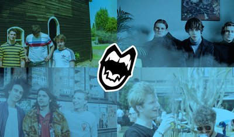
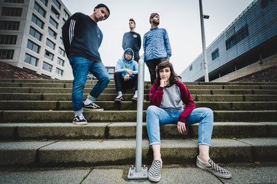

OOGVOER geeft ruimte aan kunst in al zijn uitersten. Oprecht en met
een vleugje zelfspot tonen kunstenaars wie ze zijn, wat ze zien en hoe ze
naar de wereld kijken.

vrijdag
17:00-00:30
On The House
On The House is een maandelijks terugkerende avond in de kleine zaal van Willem Twee poppodium. Elke vrijdag kun je Bij On The House nieuwe bands ontdekken in het genre Indie, Reggae/Ska, Heavy (hardere muziek) Postrock en Psychedelische muziek.
zaterdag
17:00-03:00
(S)expositie - Frank Willems
Beeldend kunstenaar Frank Willems stort zich in de wereld van de Kama Sutra. Het resultaat is een (s)expositie in CLIT CITY, in de kerkers van de Willem Twee.
vrijdag
20:00-02:00
Kalash & Nikov
Kalash & Nikov komen vanuit Rusland naar RAUWKOST om een onvergetelijk karaokefeestje neer te zetten.
vrijdag
21:00-22:00
VoidFare
VoidFare is een Indie rockband gevormd in Utrecht met achtergronden als alternatieve rock, pop en jazz.
zaterdag
21:30-22:30
Charlie & The Lesbians
Postpunk, garagerock en garagepunk. Charlie & The Lesbians uit Tilburg kan het allemaal. Deze onruststokers zijn onbeschoft, rauw en vuil in je gezicht.
vrijdag
22:00-01:00
CLIT CITY
Na een heet optreden op RAUWKOST 2019, keert Clittenband dit jaar terug met een eigen festivallocatie. CLIT CITY is een SM-Kelder op een plek waar de zon nooit schijnt. Verscholen in de kerkers van het Willem Twee Poppodium geven de meest obscure artiesten van RAUWKOST zich bloot.
vrijdag
22:00-01:00
DJ Dicky Twelve Inches
DJ Dicky Twelve Inches draait in CLIT CITY, de SM-Kelder van RAUWKOST. Deze porno-disco-DJ zorgt er met zijn porn-grooves voor dat er tot in de late uurtjes sexy gedanst kan worden.
vrijdag
22:00-01:00
DJ Donaldinho
In de Dark Room van CLIT CITY kun je de meest obscure kant van RAUWKOST ontdekken. Dj Donaldinho stort zich in de wereld van BDSM om je te voorzien van erotisch getinte nummers met een héérlijk rauw randje!
vrijdag
22:00-23:00
Ooostblok
Acht robuuste kerels, met een nog robuuster repertoire. Deze in bontjas gehulde mannen krijgen iedereen aan het dansen, inclusief jou!
zaterdag
22:15-23:00
Gaping Moles
Gaping Moles staat bekend om hun bruisende live-act met ongekende energie en spirit, en is de absolute pionier van de gladoom-cultuur.
zaterdag
22:30-23:30
The Guru Guru
De zelfverklaarde borderline rockers zijn terug, nog luider en gekker! Met hun nieuwe album ‘’Point Fingers’’ zijn ze dieper in de muziek gedoken en ontdekte hierdoor nieuwe krankzinnige energie.
vrijdag
23:00-23:45
Foxlane
Vierkoppige Indie-rockband uit Nijmegen, geinspireerd door Foals en The Growlers. Verwacht energie, rauwe gitaarriffs, melodische baslijntjes en filosofische teksten.
zaterdag
23:30-00:20
LOVE COUPLE
LOVE COUPLE maakt popliedjes kapot. De vierkoppige band heeft een bijdehante 90’s attitude en ijzersterke samenzang in een jasje van 80’s sounds.
vrijdag
00:00-02:00
BLYATSQUAD
Dj BLYATSQUAD draait geheel in thema Russian hard-bass om jou in je trainingspakkie los te laten gaan!
zaterdag
00:30-01:30
Jo Goes Hunting
De Nederlandse zanger/drummer/songwriter/alleskunner Jimmi Jo Hueting en zijn band Jo Goes Hunting is weer terug. Na een succesvol optreden in 2018, staan ze klaar om opnieuw te knallen!

zaterdag
01:30-02:15
MAYLEAF
Met de repetitieruimte gedrenkt in inspiratie uit bands als Weezer, Turnstile en King Gizzard gaat MAYLEAF het muzikale avontuur aan. Neem jij deel aan deze reis?
zaterdag
02:30-03:30
Dr. Meaker
Ze zijn terug! Dr Meaker is weer overgevlogen vanuit Bristol om in Nederland de boel onveilig te maken. Dat belooft wat.